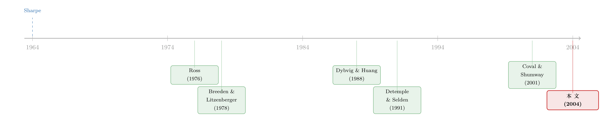

还不起债的世界里，期权成了 CAPM 漏掉的第二只手
本文读的是 Vanden (2004, Review of Financial Studies)：当所有人都受到「不能资不抵债」的非负财富约束时，市场组合上的期权不再是冗余资产，经济体的定价核（pricing kernel）会同时取决于市场组合与这些期权；于是 CAPM 必须扩展成一个「市场 beta + 期权 beta」的多 beta 模型，而它在没有约束时会干净地退回到经典 CAPM。
1 一个让人不太舒服的事实
先从一个几乎是「常识」的判断说起。
期权是零净供给（zero net supply）的衍生品——有人买，就一定有人卖，整个经济体加总起来净持有为零。更要命的是，在一个足够完备的市场里，期权的收益完全可以用标的资产和无风险债券「复制」出来。换句话说，期权是冗余的（redundant）：它不带来任何新的配置功能，它的存在与否，不该影响任何资产的定价。
如果你相信这一点，那么 Sharpe (1964) 和 Lintner (1965) 的资本资产定价模型（capital asset pricing model, CAPM）就够用了：一只资产的期望超额收益，只由它对市场组合的 beta 决定，期权？无关紧要。
可经验证据偏偏不肯配合。Bakshi, Cao, and Chen (2000)、Buraschi and Jackwerth (2001)、Coval and Shumway (2001) 这几篇实证文章先后指出：S&P 指数期权看起来并不冗余——它们的收益里藏着市场组合解释不了的东西。
于是一个自然的问题摆在面前：如果期权真的「多余」，为什么它的收益还能解释风险资产的横截面？是经验证据错了，还是我们关于「冗余」的那个常识，本身就建立在一个被悄悄省略的假设之上？
Vanden 这篇文章的回答非常干脆：问题出在「借钱」上。
2 被省略的那个摩擦：还不起债
现实世界里，没人能无限度地借钱。买股票要交保证金，按揭要有抵押，信用卡有额度上限。Dybvig and Huang (1988) 把这一类约束统称为「有界信贷（bounded credit）」，并证明它在经济学上等价于一个非负财富约束（nonnegative wealth constraint）：你可以借钱（做空无风险资产），但走到经济的终点时，你必须有能力还清欠债，财富不能为负。
这听上去只是个技术性的下界，但它的威力惊人。本文的核心论点可以浓缩成一句话：
一旦所有人都受到非负财富约束，最优的风险分担方案就不再是「线性」的，而是分段线性（piecewise linear）的；而要在证券市场里实现一条分段线性的支付曲线，你必须交易市场组合上的期权。期权于是从「冗余」变成了「非冗余」。
接着，一个更深的含义浮现出来：既然期权是均衡里真实被交易、且不可被替代的资产，那么经济体的随机贴现因子（stochastic discount factor, SDF），也就是定价核，就不可能只是市场收益的光滑函数——它会在那些「有人开始还不起债」的财富水平上出现拐点。而拐点，恰恰是期权能定价、而市场组合定不了的东西。
这正是 CAPM 漏掉的第二只手。下面我们把这只手一步步「长」出来。
3 模型：分享规则为什么会「拐弯」
3.1 设定
两个日期：date 0 和 date 1。经济体里有 \(I\) 个代理人，第 \(i\) 个的效用函数是 \(u_i(c_i)\)，其中 \(c_i \ge 0\) 是他在 date 1 的消费（也等于 date 1 的财富，因为只有一期）。本文用了四条假设：(i) 所有人都具有线性风险容忍（linear risk tolerance, LRT）且谨慎系数（cautiousness）相同；(ii) 信念一致；(iii) 都面临非负财富约束；(iv) 至少一个人在零财富处的边际效用有限。
(i) 和 (ii) 是文献里的标配，真正驱动模型的是 (iii) 和 (iv)。LRT 的精确含义是效用函数满足
$$-\frac{u_i'(c_i)}{u_i''(c_i)} = \tau_i + \gamma c_i$$
直觉上，\(\tau_i + \gamma c_i\) 是「你愿意承担多少风险」随财富线性变化；「谨慎系数相同」指斜率 \(\gamma\) 对所有人一样，只有截距 \(\tau_i\) 可以不同。这个方程的解恰好对应三类效用——负指数、幂函数、对数，本文写成三种形式，其中最干净、对资产定价含义最强的是二次效用（quadratic utility）：
$$u_i(c_i) = \tau_i c_i - \tfrac{1}{2}c_i^2$$
聚合消费 \(C\)（即所有人消费之和）是一个外生给定、连续分布的随机变量。关键的一步在于：稍后我们会把 \(C\) 直接解释成市场组合的清算红利（liquidating dividend）。
3.2 效率条件与「掉队」
如果配置是有效率的，那么对任意两个约束都没有绑定（即都还在消费）的代理人 \(i\)、\(j\)，他们的边际替代率必须相等：
$$\frac{u_i'(c_i)}{\lambda_i} = \frac{u_j'(c_j)}{\lambda_j}$$
这里 \(\lambda_i\) 是第 \(i\) 个人初始财富的影子价格（拉格朗日乘子）。令这个共同值等于 \(e^t\)，\(t\) 是均衡里待定的随机变量。如果第 \(i\) 个人的约束绑定了，他就消费不了，\(c_i = 0\)。于是每个人的配置可以统一写成
$$c_i = \max\!\big[\,0,\; u_i'^{-1}(\lambda_i e^t)\,\big]$$
把它对所有人加总，就得到聚合约束：
$$C = \sum_{i=1}^{I} c_i = \sum_{i=1}^{I} \max\!\big[\,0,\; u_i'^{-1}(\lambda_i e^t)\,\big]$$
现在定义一个实值函数 \(\Phi\)：
$$\Phi(x) \equiv \sum_{i=1}^{I} \max\!\big[\,0,\; u_i'^{-1}(\lambda_i e^{x})\,\big]$$
那么 \(t = \Phi^{-1}(C)\)，第 \(i\) 个人的最优分享规则（sharing rule）就是
$$c_i = \max\!\Big[\,0,\; u_i'^{-1}\!\big(\lambda_i\, e^{\Phi^{-1}(C)}\big)\Big]$$
Proposition 1 证明了：在上述四条假设下，这些分享规则是 \(C\) 的分段线性函数。
为什么会分段？直觉非常漂亮。先看 \(C\) 很高的状态：所有人都消费，由于大家 LRT 且谨慎系数相同，分享规则在这段是线性的，斜率由全体代理人的特征决定。接着 \(C\) 往下掉，总财富不够了，某一个（或几个）代理人的非负约束开始绑定，他掉队不消费了；剩下的人继续按线性规则分享，但斜率变了——因为分母里少了掉队那个人。\(C\) 再往下掉，又有人掉队，斜率又变一次。每一次有人掉队，斜率就跳一下，于是整条分享规则被掰成了一段一段的折线。那些拐点的位置，就是「某个人恰好还不起债」的临界财富水平。
4 拐点如何被期权「实现」
折线有了，怎么在证券市场里真正交易出来？
这里 Vanden 用了两步「去中心化」。第一步，构造一个完备市场经济，每个人把 SDF \(e^{\Phi^{-1}(C)}\) 当作给定，在预算约束下最大化期望效用——解出来的最优消费恰好就是 Proposition 1 里的分享规则。第二步，把 \(C\) 认作市场组合的支付，再引入一组市场组合上的零净供给看涨期权（call options），让大家去交易。
谁是定价者？由于资源约束必须满足，总有一个人的非负约束永不绑定——把他标为代理人 1，称作定价代理人（pricing agent）。所有资产都按他的边际替代率线性定价。第 \(j\) 个看涨期权的执行价（strike）正好设在第 \(j\) 个人「掉队」的那个临界财富处：\(K_j = \Phi\big[\log(\lambda_j^{-1}u_j'(0))\big]\)。也就是说，每一个拐点，对应一份执行价恰好落在那里的期权。折线的每一节斜率变化，都靠多持有或少持有一份相应执行价的期权来拼出来。
由此可以直接读出资产价格。对任意 date 1 支付为 \(X\) 的资产，
$$P_X = E\!\big[e^{\Phi^{-1}(C)}\,X\big] = \frac{E(X)}{R_F} + \mathrm{cov}\!\big(e^{\Phi^{-1}(C)},\,X\big)$$
定价核 \(M(C) \equiv e^{\Phi^{-1}(C)}\) 不是 \(C\) 的光滑函数——即使主观密度 \(p(C)\) 光滑，风险中性密度
$$q(C) \equiv M(C)\,p(C)\Big[\textstyle\int M(C)\,p(C)\,dC\Big]^{-1}$$
也会带着拐点。这正是「期权非冗余」在定价核层面的指纹：一个光滑的市场收益函数，永远复制不出一个有拐点的 SDF。
5 当 CAPM 必须为期权让路
把上面的机制具体到二次效用，结论变得格外锋利。此时定价核可以写成定价代理人组合支付 \(c_1\) 的线性函数 \(e^{\Phi^{-1}(C)} = \lambda_1^{-1}(\tau_1 - c_1)\)，而 \(c_1\) 本身是
$$c_1 = C + \lambda_1 \sum_{j=2}^{I}\Big\{(\bar\lambda_j)^{-1} - (\bar\lambda_{j-1})^{-1}\Big\}\max\!\big[\,0,\; C - K_j\,\big]$$
其中 \(\bar\lambda_j \equiv \lambda_1 + \lambda_2 + \cdots + \lambda_j\)。注意 \(\bar\lambda_j > \bar\lambda_{j-1}\)，所以括号里那一项是负的——这意味着：定价代理人最优地持有「市场组合 + 对所有看涨期权的空头」。 换句话说，决定一只资产风险溢价的，不再是它与市场组合的协方差，而是它与「市场 + 一篮子期权」这个组合的协方差：
$$E(R_X) - R_F = \frac{\mathrm{cov}(R_X,\,R_{c_1})}{\mathrm{Var}(R_{c_1})}\,\big[E(R_{c_1}) - R_F\big]$$
把这个关系应用到每一只期权上、再代回去，最终就得到本文的招牌结论——一个多 beta 定价模型：
这条式子的美感在于它的简约与嵌套：假设极其朴素，可一旦抽掉非负财富约束，期权重新变回冗余，期权 beta \(\{\beta_{XO_j}\}\) 全部归零，整条式子就干净地退回到 CAPM。所以它不是在「推翻」CAPM，而是精确地告诉你：当人们会还不起债时，CAPM 究竟在哪里、被什么东西修正了。这与 Fama (1998) 关心的问题——除市场之外，还有哪些状态变量该被定价——直接对上了话：本文给出的答案是「市场组合 + 那些被交易的期权」。
与那些把 SDF 写成市场收益多项式（共偏度、共峰度模型，见 Kraus and Litzenberger (1976)、Harvey and Siddique (2000)、Dittmar (2002)）或写成特征因子组合（Fama and French (1993, 1996)）的做法不同，这里的 SDF 显式地依赖一组零净供给衍生品的收益。期权第一次以「定价因子」而非配角的身份，被请进了定价核。关于把期权直接写进定价核的另一种思路，可参见《期权不该是配角：当衍生品第一次挤进「定价核」》。
6 实证：指数期权真的「有用」吗
理论说期权该有用，数据怎么说？本文第 2 节用已交易的指数期权（traded index options）去检验上面的多 beta 模型，结论是肯定的：期权收益确实能捕捉到「风险组合收益—市场收益」关系里被 CAPM 漏掉的显著不对称性。
更有意思的是各类组合的「期权风险画像」。在校正了市场代理（market proxy）与期权标的之间的错配之后，本文报告了如下的 beta 符号模式：
- 成长股（growth stocks） 平均而言有负的看跌期权 beta、正的看涨期权 beta；
- 价值股（value stocks） 的风险画像正好相反；
- 小盘股与大盘股 的看涨 beta 平均都为正，但大盘股的看跌 beta 为负、小盘股的看跌 beta 为正。
这里我只复述论文正文中明确给出的方向性（符号）结果。受所给正文截断的限制，我无法读到第 2 节具体的回归系数与 t 值，因此不在此罗列任何数字量级，以免编造。读者若要引用点估计，请回到原文表格核对。
这些符号本身已经在讲一个故事：不同风格的组合，对「市场下行时谁先还不起债」这件事的暴露方式是不一样的——而这正是期权 beta 想要捕捉的维度。期权的非冗余性，归根结底是不完备、且有约束的市场里，投资者异质性留下的痕迹。关于「在不完备市场里，每一张指数期权背后究竟站着怎样的投资者」，可参见《每一张期权背后，站着一个怎样的投资者？》。
7 文献脉络
把这条线索捋直，会看到一个很清晰的演进。
最上游是 CAPM 本身：Sharpe (1964)、Lintner (1965) 告诉我们，只有市场 beta 重要。紧接着，一批文章开始追问「约束」会怎样改写它——Black (1972) 的限制借贷、Ross (1977) 的卖空限制，都是在问：当人们不能随心所欲地融资时，定价会变成什么样。本文的非负财富约束比它们更温和（你仍可做空无风险资产），其经济基础来自 Dybvig and Huang (1988)。

另一条支流来自期权与市场完备性：Ross (1976) 指出期权是完备化市场的强大工具，Breeden and Litzenberger (1978) 则展示了一套完整的期权如何刻画 Arrow-Debreu 价格。本文与它们的差别在于——这里的市场对连续分布的 \(C\) 是强不完备的，但有限的几份已交易期权有效地完备了市场，从而带来有效配置。
而把分享规则、线性风险容忍、聚合定理串起来的，是 Wilson (1968) 的辛迪加理论、Cass and Stiglitz (1970)、以及 Rubinstein (1974) 的聚合定理；二次效用下的期权定价则可回溯到 Rubinstein (1976) 与 Black and Scholes (1973)。最后，把「期权与股票收益存在一般性互动」这一点理论化的，是 Detemple and Selden (1991)。
本文（Vanden, 2004）正坐落在这两条支流的交汇处：用 Dybvig–Huang 式的财富约束，把期权的非冗余性内生出来，并由此给出一个可检验、且嵌套 CAPM 的多 beta 模型；而 Coval and Shumway (2001) 等人的实证发现，恰好为它提供了经验上的「需求」。
8 评论与延伸（Q&A + 研究方向）
Q：非负财富约束和经典的「借贷约束 / 卖空约束」到底有什么不同？
区别在于「约束作用在哪里」。Black (1972)、Ross (1977) 限制的是头寸（不能借、不能卖空）；本文的约束作用在终点财富上——你可以自由做空无风险资产去加杠杆，但走到 date 1 时财富不能为负。它更弱、更贴近「有界信贷」的现实，却足以让分享规则变成分段线性，从而催生期权的非冗余性。
Q：期权是零净供给，为什么还能影响定价？这不违背直觉吗？
直觉来自「冗余」假设：在光滑、可复制的世界里，零净供给资产确实只是配角。但非负约束让最优支付曲线出现拐点，而拐点无法用市场组合的光滑函数复制——必须靠期权。于是期权虽然净供给为零，却在均衡里被真实交易、不可替代，自然进入定价核。零净供给与「无关定价」是两回事。
Q：这个模型「证伪」了 CAPM 吗？
没有，恰恰相反。它把 CAPM 作为一个特例嵌套进来：抽掉财富约束，期权 beta 全部归零，多 beta 模型退回标准 CAPM。所以本文的贡献是「定位」而非「推翻」——精确地指出 CAPM 在何种摩擦下、被哪一项修正。
Q：为什么定价代理人偏偏持有「市场 + 期权空头」，而不是多头？
因为他是那个约束永不绑定的人。当别人因财富约束而「掉队」时，市场的下行风险被不成比例地转移给了仍在消费的人；定价代理人通过卖出看涨期权（在二次效用下，式 (19) 中系数为负）把自己的上行收益让渡出去、换取在坏状态下相对更平滑的消费。他的组合，正是经济体「谁来承担尾部」这一分担结构的镜像。
Q：用「指数期权」检验，会不会有标的错配的问题？
会，而且本文明确处理了它——市场代理（如某个股票指数）与期权标的之间存在错配，文中在校正这一错配后才报告各组合的 beta 符号。这也是为什么我对具体点估计保持审慎：错配校正的方式会直接影响系数大小。
Q：这套逻辑能不能搬到「市场组合不可观测」的现实里去？
这是它最脆弱的一环。模型把 \(C\) 直接等同于市场组合的清算红利，而实证里市场组合本就难以测准（Roll 批判的老问题）。一旦市场代理有偏，期权 beta 的解释力有多少是「真实的额外维度」、多少是「市场代理误差的补丁」，就需要更小心地辨认。
几个可能的研究问题与提案
1. 把这套「约束→非冗余」逻辑搬到公司债与信用衍生品上。 - 【经济故事】公司债的支付天然带有「期权性」（股东对资产的看涨期权、债主写出的看跌期权）。如果投资者面临非负财富约束，信用违约互换（CDS）这类零净供给衍生品是否也会变成非冗余、并进入信用利差的定价核？这能为「为什么 CDS 收益能解释债券横截面」提供一个均衡基础。 - 【可行性】中。理论改造可行；实证需要 CDS 与公司债的配对收益（如 Markit + TRACE），识别上的难点仍是「市场组合」与约束的可观测性。
2. 用外资持有人的杠杆约束做横截面 beta 的来源。 - 【经济故事】不同国别、不同类型的投资者，其非负财富约束（保证金、监管资本）松紧不同。本文的拐点位置由「谁先掉队」决定——那么当某类受约束更紧的外资被动减仓时，期权 beta 是否会系统性地移动？ - 【可行性】中。需要投资者层面的持仓与杠杆数据（如各国托管/监管面板）；识别可借助监管冲击作为外生变化。
3. 检验定价核拐点与「有人还不起债」临界值的对应。 - 【经济故事】模型预言 SDF 的拐点正好落在临界财富 \(K_j\) 处。能否从指数期权的风险中性密度里反推出这些拐点，并与宏观上「家庭/机构去杠杆」的时点对齐？这是对本文机制最直接的检验。 - 【可行性】中偏低。风险中性密度的估计成熟，但「临界财富」在数据里没有干净对应物，需要结构化假设来桥接。
4. 流动性约束 vs 财富约束：谁让期权非冗余？ - 【经济故事】本文把非冗余性归因于财富约束，但流动性/交易成本约束也能让市场不完备。两者对期权 beta 符号的预测是否可区分？ - 【可行性】低。两类摩擦在收益数据里高度纠缠，干净识别困难，更适合先做理论分离再设计实验。
9 我的判断
本文最漂亮的地方，是用一个极其朴素的假设——「人不能资不抵债」——把一个看似纯经验的现象（指数期权能定价）变成了一般均衡的必然推论，并且让结论以 CAPM 为特例干净地嵌套。它把「期权非冗余」从一句实证观察，提升成了一条有微观基础的定理；定价核出现拐点这一点，尤其有解释力——它一举说清了为什么光滑的市场函数模型（多项式 SDF、因子模型）总会在尾部「差一口气」。
对识别的担忧主要有两层。其一是市场组合不可观测：模型把 \(C\) 钉死为市场清算红利，而实证中市场代理与期权标的的错配是核心难题，期权 beta 的增量解释力里，有多少其实是市场代理误差的「补丁」，需要更强的稳健性证据。其二是结构高度依赖效用假设：LRT + 谨慎系数相同 + 二次效用，这套组合换来了闭式解与强定价含义，但也意味着分段线性、拐点与期权空头这些结论，可能对偏好设定相当敏感；二次效用本身在无界支付下还可能引入套利（本文也坦承需要假定 \(C\) 有界）。
后续我最想看到的，是把这条逻辑放进信用市场：公司债与 CDS 的期权性更直白、零净供给的衍生品更普遍，若能在那里同样观测到「定价核拐点」与「衍生品 beta」，本文的机制就不只是关于股票指数期权的一个特例，而会成为理解信用利差横截面的一块拼图。
参考文献
- Bakshi, G., C. Cao, and Z. Chen (2000). Do Call Prices and the Underlying Stock Always Move in the Same Direction? Review of Financial Studies 13, 549–584.
- Black, F. (1972). Capital Market Equilibrium with Restricted Borrowing. Journal of Business 45, 444–455.
- Black, F., and M. Scholes (1973). The Pricing of Options and Corporate Liabilities. Journal of Political Economy 81, 637–659.
- Breeden, D., and R. Litzenberger (1978). Prices of State-Contingent Claims Implicit in Option Prices. Journal of Business 51, 621–651.
- Buraschi, A., and J. Jackwerth (2001). The Price of a Smile: Hedging and Spanning in Option Markets. Review of Financial Studies 14, 495–527.
- Cass, D., and J. Stiglitz (1970). The Structure of Investor Preferences and Asset Returns, and Separability in Portfolio Allocation. Journal of Economic Theory 2, 122–160.
- Coval, J., and T. Shumway (2001). Expected Option Returns. Journal of Finance 56, 983–1009.
- Detemple, J., and L. Selden (1991). A General Equilibrium Analysis of Option and Stock Market Interactions. International Economic Review 32, 279–303.
- Dittmar, R. (2002). Nonlinear Pricing Kernels, Kurtosis Preference, and Evidence from the Cross-Section of Equity Returns. Journal of Finance 57, 369–403.
- Dybvig, P., and C. Huang (1988). Nonnegative Wealth, Absence of Arbitrage, and Feasible Consumption Plans. Review of Financial Studies 1, 377–401.
- Fama, E. (1998). Determining the Number of Priced State Variables in the ICAPM. Journal of Financial and Quantitative Analysis 33, 217–231.
- Fama, E., and K. French (1993). Common Risk Factors in the Returns on Stocks and Bonds. Journal of Financial Economics 33, 3–56.
- Fama, E., and K. French (1996). Multifactor Explanations of Asset Pricing Anomalies. Journal of Finance 51, 55–84.
- Harvey, C., and A. Siddique (2000). Conditional Skewness in Asset Pricing Tests. Journal of Finance 55, 1263–1295.
- Kraus, A., and R. Litzenberger (1976). Skewness Preference and the Valuation of Risk Assets. Journal of Finance 31, 1085–1100.
- Lintner, J. (1965). The Valuation of Risk Assets and the Selection of Risky Investments in Stock Portfolios and Capital Budgets. Review of Economics and Statistics 47, 13–37.
- Ross, S. (1976). Options and Efficiency. Quarterly Journal of Economics 90, 75–89.
- Ross, S. (1977). The Capital Asset Pricing Model (CAPM), Short-Sale Restrictions and Related Issues. Journal of Finance 32, 177–183.
- Rubinstein, M. (1974). An Aggregation Theorem for Securities Markets. Journal of Financial Economics 1, 225–244.
- Rubinstein, M. (1976). The Valuation of Uncertain Income Streams and the Pricing of Options. Bell Journal of Economics 7, 407–425.
- Sharpe, W. (1964). Capital Asset Prices: A Theory of Capital Market Equilibrium Under Conditions of Risk. Journal of Finance 19, 425–442.
- Vanden, J. M. (2004). Options Trading and the CAPM. Review of Financial Studies 17(1), 207–238.
- Wilson, R. (1968). The Theory of Syndicates. Econometrica 36, 119–132.